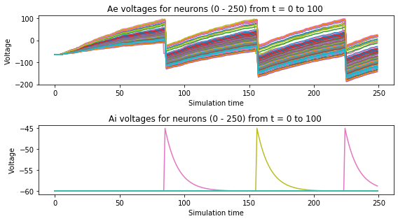

STDP手写数字识别

数字识别的SNN，其基于具有更高生物似然性的机制，即基于电导而不是基于电流的突触，具有随时间变化的体重变化，横向抑制和自适应峰值阈值的基于脉冲时序的可塑性(STDP)
采用无监督的学习方式。
bindsnet 一个Python软件包，用于使用PyTorch Tensor功能在CPU或GPU上模拟脉冲神经网络（SNN）
首先在github上将项目搂下来。sinabs
进入项目根目录（有setup.py）进行本地pip安装 ： pip install -e
bindsnet已经帮助我们以及把脉冲编码，神经元模型等定义好了，方便极了。
1 | import os |
1 | # all_activity spikes(n_samples, time, n_neurons) |
构建网络
使用binsnet中 diehl&Cook模型,我们暂时不用去关心模型的细节。
1 | network = DiehlAndCook2015( |
1 | network |
DiehlAndCook2015(
(X): Input()
(Ae): DiehlAndCookNodes()
(Ai): LIFNodes()
(X_to_Ae): Connection(
(source): Input()
(target): DiehlAndCookNodes()
)
(Ae_to_Ai): Connection(
(source): DiehlAndCookNodes()
(target): LIFNodes()
)
(Ai_to_Ae): Connection(
(source): LIFNodes()
(target): DiehlAndCookNodes()
)
)
加载数据
通过Bindsnet封装的数据集， 可以直接调用，将数据进行脉冲编码。
Possion编码是一个频率编码。
1 | def test_poisson(): |
1 | spikes = test_poisson() |
1 | dataset = MNIST( |
1 | dataset |
Dataset TorchvisionDatasetWrapper
Number of datapoints: 60000
Root location: data\MNIST
Split: Train
StandardTransform
Transform: Compose(
ToTensor()
Lambda()
)
使用Monitor来记录 exc 和 inh层 voltage
1 | exc_voltage_monitor = Monitor(network.layers["Ae"], ["v"], time=time) |
1 | # 监听脉冲，以及电压值 |
训练网络
- 精度计算
1 | # 计算精度 |
- 画图
1 | def draw(batch, exc_voltagesl,inh_voltages ): |
1 | print("\nBegin training.\n") |
Begin training.
0%| | 0/60000 [00:00<?, ?it/s]
……………………………………………………………….two years later…………………………………………………………………………..

99%|█████████████████████████████████████████████████████████████████████████ | 59250/60000 [4:50:13<03:40, 3.41it/s]
All activity accuracy: 78.00 (last), 76.35 (average), 86.80 (best)
Proportion weighting accuracy: 78.40 (last), 77.21 (average), 86.80 (best)
99%|█████████████████████████████████████████████████████████████████████████▍| 59500/60000 [4:51:27<02:26, 3.41it/s]
All activity accuracy: 77.60 (last), 76.36 (average), 86.80 (best)
Proportion weighting accuracy: 77.60 (last), 77.21 (average), 86.80 (best)
100%|█████████████████████████████████████████████████████████████████████████▋| 59750/60000 [4:52:40<01:13, 3.40it/s]
All activity accuracy: 74.80 (last), 76.35 (average), 86.80 (best)
Proportion weighting accuracy: 76.40 (last), 77.21 (average), 86.80 (best)
100%|██████████████████████████████████████████████████████████████████████████| 60000/60000 [4:53:53<00:00, 3.54it/s]
Progress: 1 / 1 (17633.7226 seconds)
Training complete.
result
All activity accuracy: 76.40 (last), 75.78 (average), 84.00 (best)
Proportion weighting accuracy: 75.60 (last), 76.45 (average), 85.20 (best)
100%|██████████████████████████████████████████████████████████████████████████| 60000/60000 [4:52:35<00:00, 3.48it/s]
Progress: 1 / 1 (17555.5081 seconds)
Training complete.
tensor([0., 0., 0., 0., 0., 0., 0., 0., 0., 0., 0., 0., 0., 0., 0., 0., 0., 0., 0., 0., 0., 0., 0., 0.,
0., 0., 0., 0., 0., 0., 0., 0., 0., 0., 0., 0., 0., 0., 0., 0., 0., 0., 0., 0., 0., 0., 0., 0.,
0., 0., 0., 0., 0., 0., 0., 0., 0., 0., 0., 0., 0., 0., 0., 0., 0., 0., 0., 0., 0., 0., 0., 0.,
0., 0., 0., 0., 0., 0., 0., 0., 0., 0., 0., 0., 0., 0., 0., 0., 0., 0., 0., 0., 0., 0., 0., 0.,
0., 0., 0., 0.])